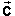

Question. The final example of working with scalar components involves a difference of two vectors.
Suppose you are given a net force  and are told that it is equal to the sum of two forces and where is a known force.
In analogy to adding vectors by components, calculate the unknown difference force ,
= - .
The force vectors and are illustrated in the diagram and their components are listed underneath.